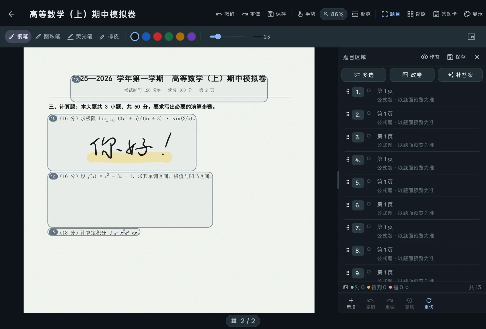
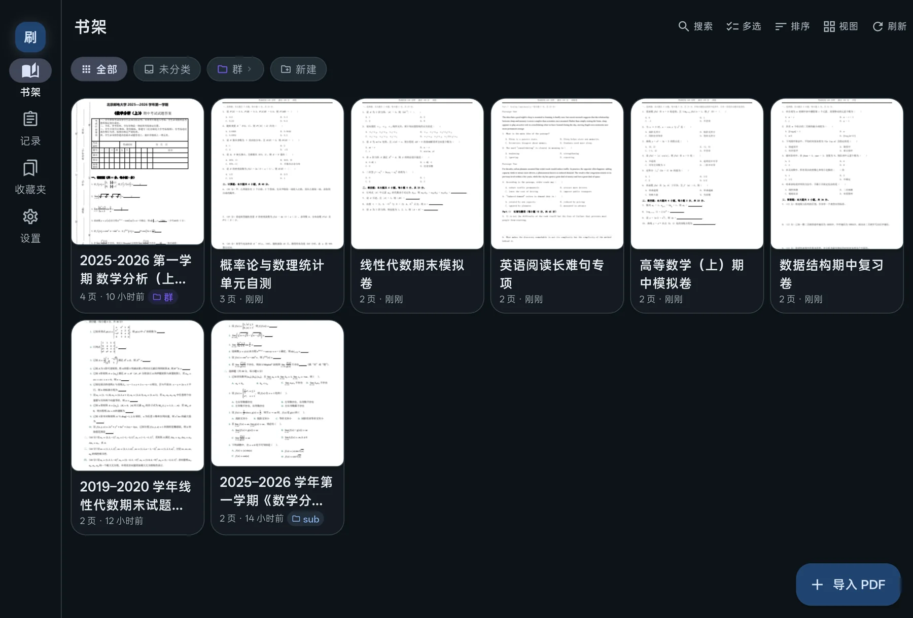
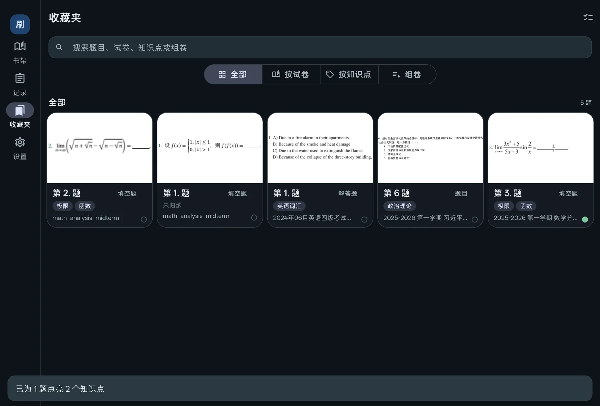
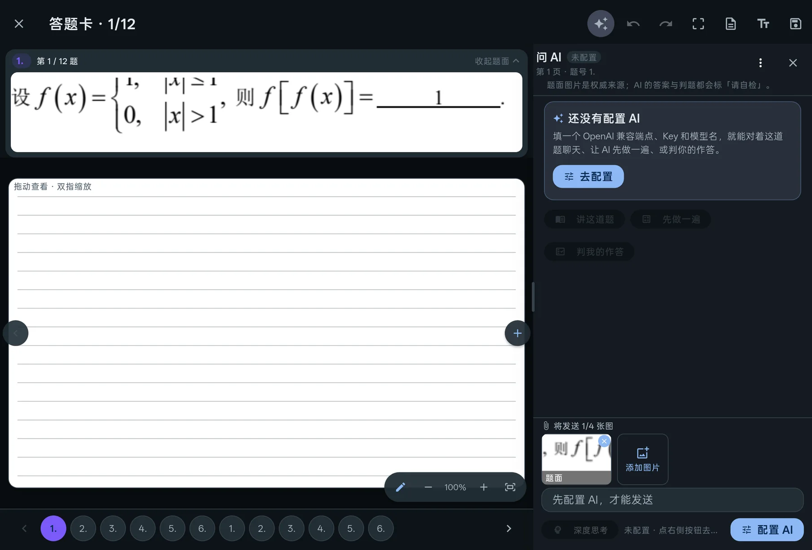
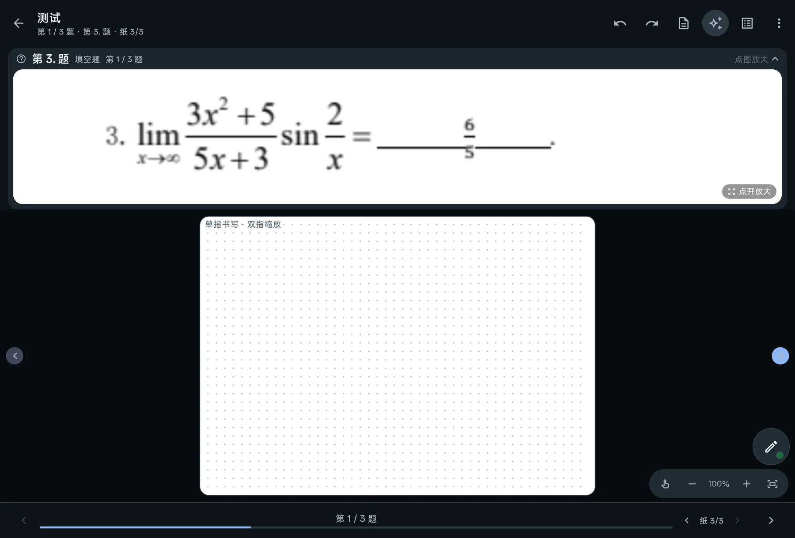
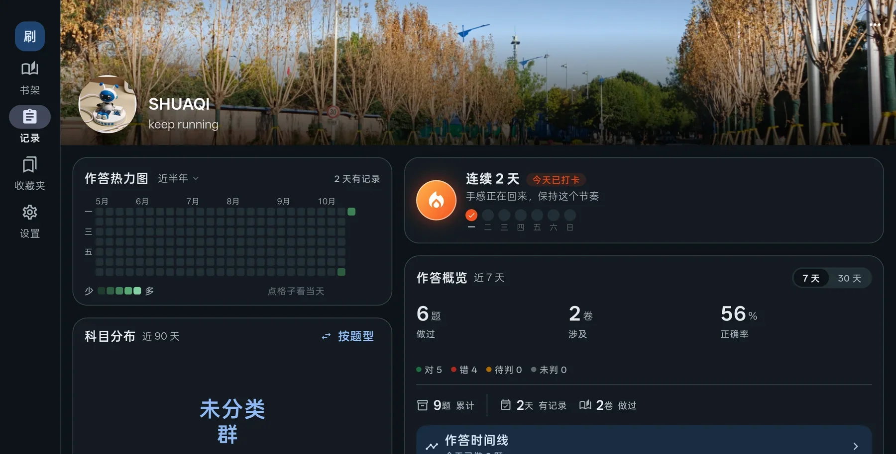

Android 平板 · 手写笔 · 全部在本机
把你的 PDF 卷子 变成能判分的题本
导入你手上那份真实的 PDF 试卷，用手写笔直接在卷面上写。刷起会把一页卷子拆成一道一道题， 判出对错，再让错题长成下一套可以重刷的卷子。
- 无需注册
- 无广告 · 无内购
- 离线也能判
- 不传任何卷子

真实界面截图 · OPPO 平板横屏
三个动作，撑起整个产品
为什么生态位
题库 App 只能用它的题。
刷起能用你自己的卷子。
手写笔记 App
笔感好、生态成熟
不懂「题」：没有判题、错题本、组卷
题库 / 背题 App
有题库、有复习算法
只能用它的题，装不进你的 PDF
打印 + 红笔
手感无可替代
不能统计、不能二刷、带不走
刷起
你自己的 PDF + 真手写
切题、判题、二刷、记录 —— 一条路走完
00书架
先把卷子
放进书架。
导入你自己的 PDF —— 一次可以选好几份。同一份卷子不会重复进来（按文件内容做指纹比对）。 之后是列表、大图、树形三种看法，文件夹能嵌套，标签像书签一样贴在卡片右上角。
- 三种视图列表 / 大图 / 单栏树，文件夹可嵌套，长按拖动改归属。
- 标签是书签贴在卡片角上，按名字稳定配色，不占布局。
- 内容去重同一份 PDF 再导入会被拦下，直接跳到已有那一卷。

01切题
一页卷子，
会先被拆成一道一道题。
这一步是从「看 PDF」跨到「做题」的分水岭。只有先切成题，才可能有判题、错题本、知识点和组卷。
- 两套切题 文本版 PDF 读文字层；扫描件按行与题号推断。两条路最后都落在同一套框上。
- 切歪了就手调 切分、并入、跨页、改题号、锁定。锁住的框，重新切题也不会被覆盖。
- 每题一个框 框是这道题的坐标：点一下跳过去，写的时候它就是一张独立的答题卡。
切题 · 演示
2025—2026 学年第一学期 · 数学分析（上）
三、计算题（每小题 8 分，共 32 分）
7
设函数 f(x) 在 x = 0 处连续，且 limx→0 f(x)/x = 1，求 f′(0)。
8
已知数列 {an} 满足 a1 = 1，an+1 = 2an + 1，求 a5。
9
计算定积分 ∫01 (2x + 1) dx。
10
设矩阵 A 可逆，且 |A| = 2，求 |A−1 + A*| 的值。
正在识别页面结构…
示意图。真机上框线可以拖、可以拉角，也可以锁定。
02判题
判题先本地，
判不了才问 AI。
选择题、数值题在设备上就能判，不联网、不花钱、不排队。本地判不了，或者手写识别没把握， 才亮一个琥珀色的点，由你决定要不要交给 AI。
- 三种结论，不是两种对 / 待判 / 错。待判不等于错，它只是「我还没把握」。
- 手改永远最优先你亲手改过的结论，AI 不会覆盖。
- 没有答案就不判按钮直接置灰并说明原因，不假装判过。
题目区域
- 1本地
- 2本地
- 3本地
- 4待确认
- 5AI · 请自检
- 6本地
0 对
0 待判
0 错
本地 5 题 · 1 题问 AI
第 4 题的手写识别置信度不够 —— 可以先手改，也可以问 AI。
点「改卷」重播。琥珀色的「待判」是本产品最不愿意妥协的一个状态。
03二刷
错题会自己
长成第二本卷子。
收藏是跨卷快照：原卷删了，题还在。打上知识点，或者让 AI 归纳后由你逐题确认， 再挑几道组一套新卷 —— 用一张空白答题卡重做，每一次重刷都是一份独立记录。
- 收藏即快照 题面、你的作答、判定、AI 对话一起带走，不依赖原卷还活着。
- 组卷连刷 多选建卷、长按拖动排序，一次刷完一套。二刷写在新纸上，不覆盖第一遍。
- 回看出处 任何时候都能跳回原卷的那一页、那道题，看看当时是怎么写的。
组卷
三刷 · 高数易错
3 题 · 长按可调顺序
三刷 · 高数易错
10 月 26 日 · 第 2 遍
空白答题卡
已保存这次重刷记录
收藏 → 知识点 → 组卷 → 空白重做 → 记录这一次。



04下笔
就在这张纸上写。
钢笔、圆珠笔、荧光笔、橡皮。橡皮不是删掉整笔，而是把笔画切开 —— 中间擦掉，两头还在。 停笔半秒，图形吸附会把歪歪扭扭的直线和矩形摆正。下面这块纸是真的能写。
在这儿写两笔 —— 有手写笔的话，压感也会带上
完整功能在平板上：六种纸感、夜读、图形吸附、五十步撤销、掌托拒识。
05记录
记录的是行为，
不是打卡海报。
哪一天写了多少题、哪些科目写得最多、最近七天正确率多少 —— 每一个数字都能点回那天、那套卷、那道题。
- 13 / 26 / 52 周热力图点一个格子，看那天的小结。
- 科目与题型词云手指搅动像沙盘，松手弹回原位。
- 作答时间线按试卷或按题目，点卡就回到那一刻。

作答热力图
近 26 周
少 多
把鼠标放到格子上
06归属
卷子是你的，笔迹也是。
没有服务器需要你信任。
不需要账号
没有登录、没有云同步、没有埋点上报。安装完就能用。
全在本机
PDF、笔迹、判题结果都在应用私有目录里，不上传、不中转、不分析。
AI 是可选项
填你自己的 OpenAI 兼容端点与 Key，请求直接发往你填的地址；不填也完全能用。
一键备份
卷子、笔迹、收藏、记录打包成一个 zip。换机、卸载前都能带走。
没有"账号丢了资料就没了"的恐惧。唯一需要你保管的，是自己填的那串 API Key。
07问答
先说清楚
它现在还不能做什么。
这是一个内测版本。下面每一条都是真的，写在这里是为了让你少走弯路。
需要联网吗？
不需要。卷子、笔迹、判题、记录全在本机，飞行模式也能写能判。两个例外：本地手写识别第一次要联网下载模型；AI 功能当然要联网。
没有 AI Key 是不是就只能当笔记用？
不是。选择题与数值题在本地就能判，收藏、组卷、二刷、记录都不依赖 AI。AI 只负责本地判不了的那部分，以及和你讨论思路。
能算一整卷的总分吗？
暂时不能。单题可以判对错，但没有"交卷 → 总分 / 成绩报告"这一页，这是目前最明显的缺口，已经排在下一版。
公式题能识别吗？
现在只给图。公式题会保留题面截图，可以写、可以问 AI，但不会把公式变成文本再去判分。
有 iOS、Windows 或网页版吗？
没有。目前只有 Android（arm64），界面按平板横屏设计；手机能跑，但会很挤。
我的卷子会被上传吗？
不会。没有服务器，也没有中转。只有你主动使用 AI 功能时，那一道题的题面或图片才会按你的配置发给你自己填的端点。
以后换平板，数据怎么办？
设置 → 数据 → 导出备份，得到一个 zip；新设备上从备份恢复即可。恢复前会先把当前数据留一份底。
下载内测版
现在，
把你的卷子
搬进来。
Android 平板 + 手写笔体验最好。装完第一次打开会建库，几秒钟。
- 版本
- 0.1.3 (4)
- 系统
- Android 8.0 以上 · arm64
- 体积
- 36.9 MB · 38,641,451 字节
- 构建
- 2026-10-28
SHA-256
385612637B2F85F17BE5AF6424577F82FE860B992854F6213124A890247905A0
-
01
导入一份 PDF 卷子
书架右下角「导入 PDF」，可以多选。同一份不会重复导入。
-
02
点开「题目」看切题
切歪了就拖框调整：切分、并入、改题号、锁定。
-
03
写，然后改卷
答题卡里作答，工具行点「改卷」。判完的题收藏起来，下次组卷二刷。
内测包提示 这一版用发布密钥签名（仅 arm64）。如果你装过更早的调试版，两个包签名不同、不能覆盖安装，需要先卸载 —— 卸载会一起删掉本机数据，请先在「设置 → 数据」里导出备份。